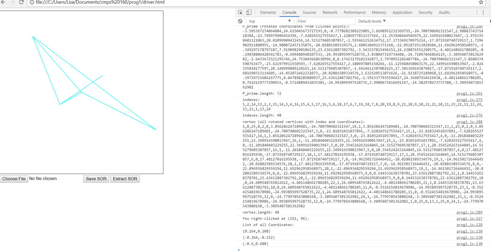
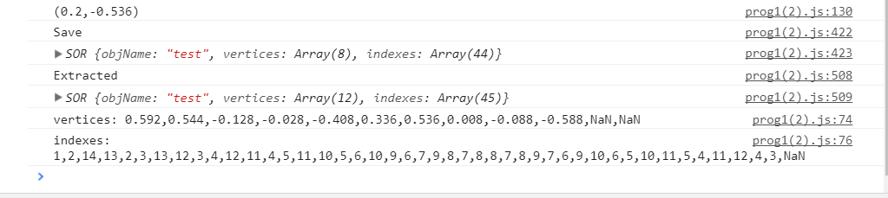

Create a blank (white) canvas at least 500 x 500 in dimension.
Recognize left and right mouse clicks. Terminates polyline on right mouse click.
Draw rubberband line between the last point and the current mouse position.
Rotates 12 coordinates around point and prints out array to console.
Translates 12 coordinates from unit cylinder to the left mouse points and prints array to console.
Creates an index array and prints it to the console.
Creates a vertex array with both indices and coordinates for each index to connect and prints array to console.
Stores and extracts GC
drawArrays() and drawElements() do not function, so even though the coordinates rotated around the vertex and the indices are calculated, the lines do not draw.
Does not display file on canvas after extracting.
Move mouse around canvas and left-click to create a rubberband line. Move the mouse again to decide where to place a rubberband line on the next left mouse click. Coordinates are calculated to generate a cylinder between the last and most recent mouse clicks. The polyline is completed when the user right clicks. The user can also save a file, choose the file, and extract the file.
None.
 